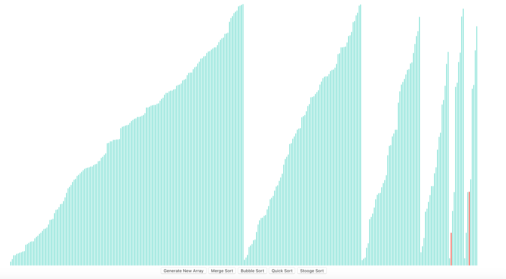

Sorting Visualizer
During the end of my Freshman year, I was taking a course on data structures and algorithms and I wanted to gain a better appreciation of how algorithms functioned and why time complexity matters. To accomplish this, I decided to create a basic algorithm visualizer using React. I had seen many upcoming deveopers create their own basic visualizer and I decided to try to build one as well. I taught myself the basics of React and coded some of the different algorithms that we had learned about in the course. When it was finally complete, I was able to see the importance of time complexity and how it greatly impacts the performance of software programs. This project helped to give me a better understanding of how the algorithms function and the importance of speed in software programs.